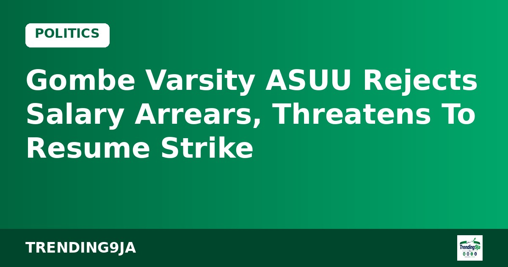
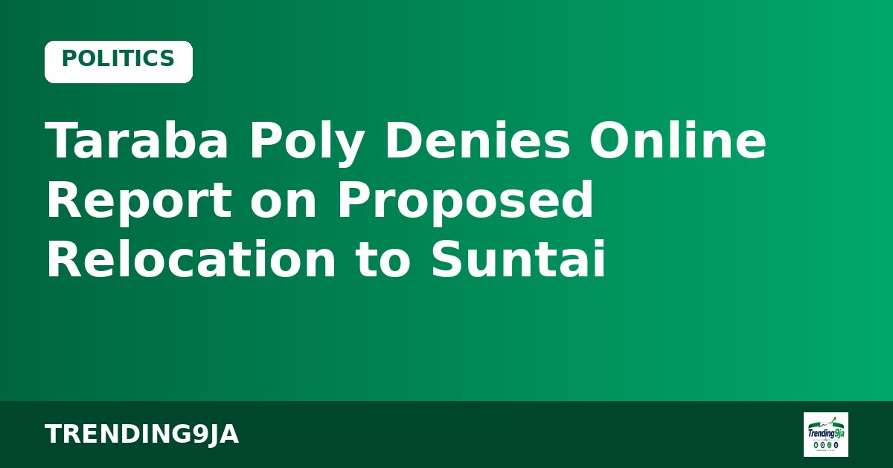

INEC Promises Inclusive 2027 Elections for Persons With Disabilities
INEC has reaffirmed its commitment to removing barriers for Persons with Disabilities ahead of the 2027 general elections, according to Punch.

Members of the Academic Staff Union of Universities at Gombe State University have rejected the shortfalls in salary arrears disbursed to them and warned of potential industrial action, according to Punch. The lecturers claimed that the payments did not match the terms contained in the 2025 agreement between the union and the Federal Government.
The decision was reached during a congress meeting held in Gombe on Tuesday. In an official statement released by the branch chairperson, Dr Mustapha-Shehu Shehu, alongside the branch secretary, Dr Aliyu-Umar Shelleng, the union expressed dissatisfaction with how the university management handled the salary adjustments.
According to Punch, the lecturers resolved to begin active non-compliance starting Wednesday, November 4. The union stated that the protest would continue until every academic staff member receives their full payment for October 2026.
In addition, the branch disclosed plans to request approval from the national executive council of the union to restart their suspended strike action. Lecturers maintained that work would not fully return to normal until the university pays the correct arrears owed under the updated wage structure.
This development follows an earlier announcement by the Gombe State Governor, Muhammadu Yahaya, who approved a monthly subvention top-up of N148.762 million for the institution. The funds were meant to facilitate the implementation of the Consolidated Academic Tool Allowance starting in October 2026.
The Secretary to the State Government, Prof. Ibrahim Njodi, had stated through the Director-General of Press Affairs, Ismaila Misilli, that the addition represented a 56 per cent rise in monthly allocation. He added that the state government intended to capture the extra spending within its 2026 supplementary budget.
Sources: Punch
← More Politics storiesINEC has reaffirmed its commitment to removing barriers for Persons with Disabilities ahead of the 2027 general elections, according to Punch.

Taraba State Polytechnic has dismissed a report about its proposed relocation to Suntai, labeling the online publication as an unauthorized AI-generated piece.

A coalition of 42 trade unions in Delta State representing over 120,000 informal workers has declared support for President Bola Tinubu and APC candidates in 2027.
Nigeria's trending news, politics and entertainment, straight to your email.
By subscribing you agree to our Privacy Policy. Unsubscribe any time.